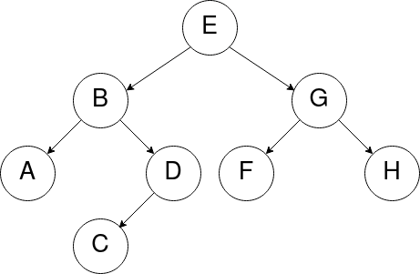

Parcours d'arbres
Définition : Un parcours d'arbre est un type d'algorithme consistant à visiter les noeuds d'un arbre en suivant un certain ordre.
Pourquoi parcourir ?
- Rechercher si un arbre contient une valeur particulière.
- Compter les noeuds qui contiennent une valeur donnée.
- etc.
Il existe deux façons de parcourir un arbre :
- le parcours en profondeur
- le parcours en largeur
Voici un arbre binaire que l'on souhaite parcourir :

Le parcours en largeur d'abord
Le parcours en largeur consiste à parcourir l'arbre niveau par niveau. Le noeud de niveau (ou profondeur) 0 (ou 1 selon la convention choisie pour la profondeur), c'est-à-dire le noeud racine, est d'abord parcouru, puis les noeuds de niveau 1 (ou 2), et ainsi de suite.
À chaque niveau, les noeuds sont parcourus de gauche à droite.
Note : On peut parler de parcours en largeur "d'abord", car même si le parcours est d'abord effectué en largeur, l'arbre est bien sûr ensuite visité en profondeur (on visite les noeuds d'un niveau de l'arbre, puis on passe au niveau suivant, etc.)
Sur l'arbre ci-dessous : [E, B, G, A, D, F, H, C]

Déroulement du parcours en largeur
Initialement, on a deux listes :
à visiter = [E]
visités = []
On visite E (on le retire de la liste des noeuds à visiter et on l'ajoute dans celle des noeuds visités), puis on ajoute ses noeuds fils (d'abord gauche, puis droit) à la fin des noeuds à visiter.
à visiter = [B, G]
visités = [E]
On visite le premier noeud B de la liste à visiter (on l'ajoute à la fin de la liste des noeuds visités), puis on ajoute ses noeuds fils à la fin de la liste des noeuds à visiter :
à visiter = [G, A, D]
visités = [E, B]
On continue avec le noeud G :
à visiter = [A, D, F, H]
visités = [E, B, G]
On continue avec le noeud A (qui n'a pas de fils, donc on ajoute rien dans les noeuds à visiter) :
à visiter = [D, F, H]
visités = [E, B, G, A]
Et ainsi de suite...
à visiter = [F, H, C]
visités = [E, B, G, A, D]
à visiter = [H, C]
visités = [E, B, G, A, D, F]
à visiter = [C]
visités = [E, B, G, A, D, F, H]
à visiter = []
visités = [E, B, G, A, D, F, H, C]
Note
Les premiers noeuds ajoutés dans à visiter sont les premiers noeuds visités. Si l'on implémentait cet algorithme, on pourrait donc utiliser une structure de file, car on ajoute les noeuds à la fin, et on les retire au début.
Le parcours en profondeur d'abord
Le parcours en profondeur d'un arbre est un type de parcours d'arbres qui consiste à traiter la racine de l'arbre, et à parcourir récursivement les sous-arbres gauche et droit de la racine.
Les parcours préfixe, infixe et suffixe (également appelé postfixe) se distinguent par l'ordre dans lequel sont effectués ces traitements.
Parcours préfixe - (Racine-Gauche-Droite)
Dans le parcours préfixe, la racine est traitée avant les appels récursifs sur le sous-arbre gauche, puis sur le sous-arbre droit.
Déroulement du parcours préfixe
Précondition : L’arbre n’est pas vide
Le parcours préfixe se déroule comme suit :
- On
visitele noeud racine de l’arbre. - On effectue le
parcours préfixedu sous-arbre gauche (s’il est NON vide). - On effectue le
parcours préfixedu sous-arbre droit (s’il est NON vide).
(La fonction visite reste à définir, cela pourrait être un simple affichage.)
Une technique visuelle : En se "baladant" autour de l'arbre (ordre de visite des noeuds en pointillés), on liste chaque noeud la première fois qu’on le rencontre dans la balade.
Sur l'arbre ci-dessous : [E, B, A, D, C, G, F, H]

Parcours suffixe ou postfixe - (Gauche-Droite-Racine)
Dans le parcours suffixe (ou postfixe), la racine est traitée après les appels récursifs sur le sous-arbre gauche puis sur le sous-arbre droit.
Déroulement du parcours suffixe
Précondition : L’arbre n’est pas vide
Le parcours suffixe se déroule comme suit :
- On effectue le
parcours suffixedu sous-arbre gauche (s’il est NON vide). - On effectue le
parcours suffixedu sous-arbre droit (s’il est NON vide). - On
visitele noeud racine de l’arbre.
Une technique visuelle : En se "baladant" autour de l'arbre, on liste chaque noeud la dernière fois qu’on le rencontre dans la balade.
Sur l'arbre ci-dessous : [A, C, D, B, F, H, G, E]
Parcours infixe - (Gauche-Racine-Droite)
Dans le parcours infixe, le traitement de la racine est effectué entre les appels sur les sous-arbres gauche et droit.
Déroulement du parcours infixe
Précondition : L’arbre n’est pas vide
Le parcours infixe se déroule comme suit :
- On effectue le
parcours infixedu sous-arbre gauche (s’il est NON vide). - On
visitele noeud racine de l’arbre. - On effectue le
parcours infixedu sous-arbre droit (s’il est NON vide).
Une technique visuelle : En se "baladant" autour de l'arbre, on liste chaque noeud ayant un fils gauche la seconde fois qu’on le voit et chaque noeud sans fils gauche la première fois qu’on le voit.
Sur l'arbre ci-dessous : [A, B, C, D, E, F, G, H]
Autre méthode
On peut également retrouver visuellement les trois parcours préfixe, infixe et postfixe en ajoutant les sous-arbres vides (et arêtes associées) au dessin d'un arbre binaire. Si on trace à présent le contour de l'arbre :
- l'ordre préfixe est obtenu en listant les noeuds lorsque l'on passe à leur gauche,
- l'ordre suffixe est obtenu en listant les noeuds lorsque l'on passe à leur droite,
- l'ordre infixe est obtenu en listant les noeuds lorsque l'on passe en dessous.
Pour vous entraîner : voir cette fiche d'exercices.